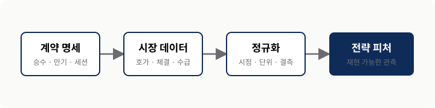
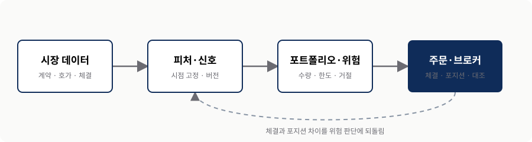
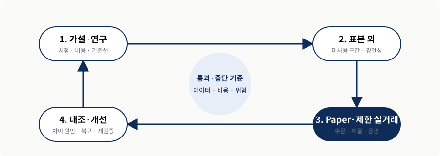

시장 구조
계약·만기·세션을 먼저 맞춘다.
2026.08.22
수급·거래량에서 검증·실행·리스크 관리까지
수급과 거래량은 가설을 만드는 재료다. 자동매매의 품질은 데이터·체결·리스크를 함께 재현하는 과정에서 결정된다.
계약·만기·세션을 먼저 맞춘다.
관찰을 시점이 고정된 피처로 바꾼다.
상태를 대조하고 실패 전에 멈춘다.
오늘의 질문 — 무엇을 예측할지가 아니라 무엇을 검증하고 어디서 멈출 것인가?
발표 사례를 따라가되, 각 단계에서 검증 가능한 산출물을 하나씩 남깁니다.
시장 구조
수급·거래량
자동매매
OOS·paper
중단·복구
산출물 — 계약 명세, 피처 정의, 주문 로그, 대조 결과, 위험 런북.
SECTION 01
시장 구조 · 만기 · 세션 · 결제
01가격만 저장하면 만기 이동, 승수, 세션과 결제 차이를 재현할 수 없습니다.
기초자산·승수·호가 단위
만기·잔존시간·세션
행사·배정·결제 방식
호가·거래량·미결제약정
출처: KRX KOSPI 200 Options 계약 명세, 확인일 2026-08-22.
비교 원칙 — 시장 이름보다 동일한 위험 단위와 정보 시점으로 맞춘다.
계약 명세와 시장 데이터를 먼저 정규화한 뒤에 피처를 계산합니다.

만기 당일에는 정보·호가·체결 지연이 포지션에 미치는 영향이 빠르게 달라질 수 있습니다.
출처: Cboe 2025 Options Industry Review, CME Options Education. 확인일 2026-08-22.
거래량 ≠ 적합성 — 활발히 거래된다는 사실은 전략 수익성이나 개인 적합성을 보장하지 않는다.
SECTION 02
수급 · 거래량 · 매물대 · 시점
02계산 시점과 정보 가용 시점이 고정되지 않으면 사후 설명이 신호로 둔갑합니다.
OBSERVATION
경험과 차트가 만드는 후보 설명
TESTABLE FEATURE
다음 구간에서 같은 규칙으로 계산
반증 질문 — 공개 지연과 비용을 반영한 뒤에도 기준선보다 나은가?
무엇을 계산했는지와 언제 알 수 있었는지를 한 쌍으로 기록합니다.
상품·만기별 순수량/순대금과 공개 지연.
해당 시점까지 누적된 행사가·가격대별 값.
동일 만기·델타 구간과 호가 시각.
룩어헤드 방지 — 미래 구간, 장 마감 집계, 사후 수정값을 장중 의사결정에 넣지 않는다.
가격, 미결제약정, 스프레드, 만기 이동을 함께 두고 설명을 경쟁시킵니다.
후속 구간과 이벤트를 확인.
미결제약정과 체결 방향을 확인.
다른 옵션 다리와 기초자산을 확인.
가설 경쟁 — 가장 그럴듯한 설명이 아니라 다음 데이터에서 살아남는 설명을 선택한다.
SECTION 03
데이터 · 신호 · 위험 · 주문 · 대조
03체결과 포지션 차이가 위험 판단으로 돌아와야 시스템 상태가 닫힙니다.

자동화는 책임을 없애지 않고 오류가 퍼지는 경계를 명확하게 만듭니다.
시점·계약·결측. 미래 보간 금지.
피처·목표 포지션. 잔고 추정 금지.
수량·손실·집중. 임의 완화 금지.
주문 수명주기. 중복 주문 금지.
정본 — 실제 포지션과 체결은 브로커 상태와 대조해 설명할 수 있어야 한다.
옵션 체인을 조회하고 주문을 보낼 수 있어도 데이터 권한·실패 응답·재접속 상태는 따로 검증해야 합니다.
CAPABILITY
PREREQUISITE
출처: IBKR Campus TWS API, 확인일 2026-08-22.
구현 순서 — 정상 주문보다 거절·부분 체결·재접속을 먼저 재현한다.
SECTION 04
표본 외 · paper · 제한 실거래 · 대조
04각 단계에는 통과 기준과 중단 신호가 함께 있어야 합니다.

백테스트와 라이브의 차이를 수익률 하나가 아니라 원인별로 분해합니다.
데이터 시점과 스케줄 이벤트.
스프레드·지연·호가 깊이.
부분 체결·거절·재시작.
출처: QuantConnect Live Trading Reconciliation, 확인일 2026-08-22.
대조 — 차이를 제거하는 것보다 설명하고 한도 안에 두는 것이 먼저다.
SECTION 05
포지션 · 전략 · 데이터 · 시스템
05진입 전에 각 위험 층의 감시, 자동 조치와 재개 조건을 약속합니다.
그릭스·만기 집중 → 축소·헤지
드로다운·체결 괴리 → 일시 정지
지연·결측 → 주문 생성 차단
중복·불일치 → kill switch·대조
출처: CME Fundamentals of Options on Futures와 세미나 리스크 토론. 확인일 2026-08-22.
사전 약속 — 만들지 않을 주문, 줄일 조건, 완전히 멈출 조건을 코드와 런북에 함께 둔다.
한 시장·한 만기·한 가설로 좁히고 비용과 중단 기준을 먼저 고정합니다.
입력·시점·행동·예상 관계가 한 문장으로 명시됐는가?
수수료·스프레드·슬리피지·시장 충격을 포함했는가?
어떤 결과와 상태에서 실험을 멈추고 복구할 것인가?
선택 기준 — 결과가 좋았는지가 아니라 같은 규칙으로 다시 설명할 수 있는가?
KEY TAKEAWAYS
시장·만기·시점의 언어를 맞춘다.
관찰을 반증 가능한 피처로 바꾼다.
체결을 대조하고 손실 전에 멈춘다.
학습 자료이며 투자 권유가 아닙니다 · Q&A